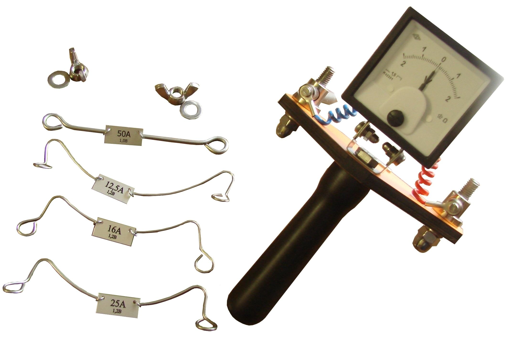
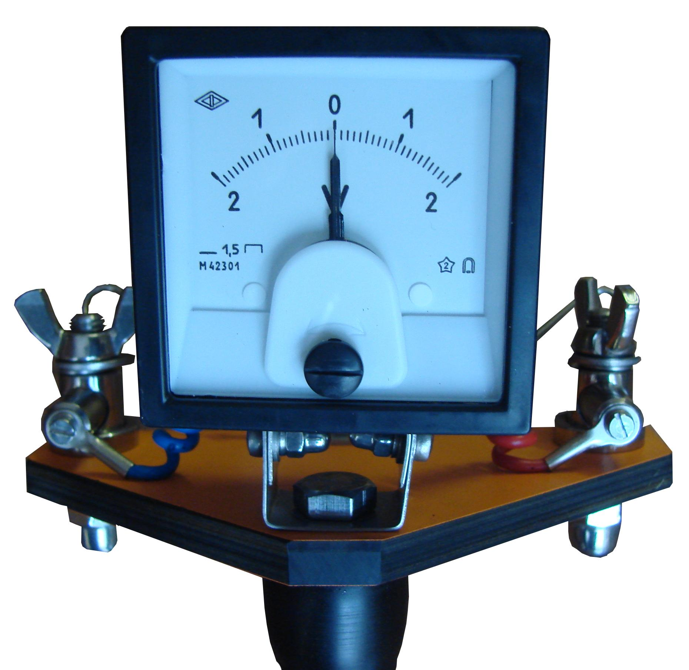
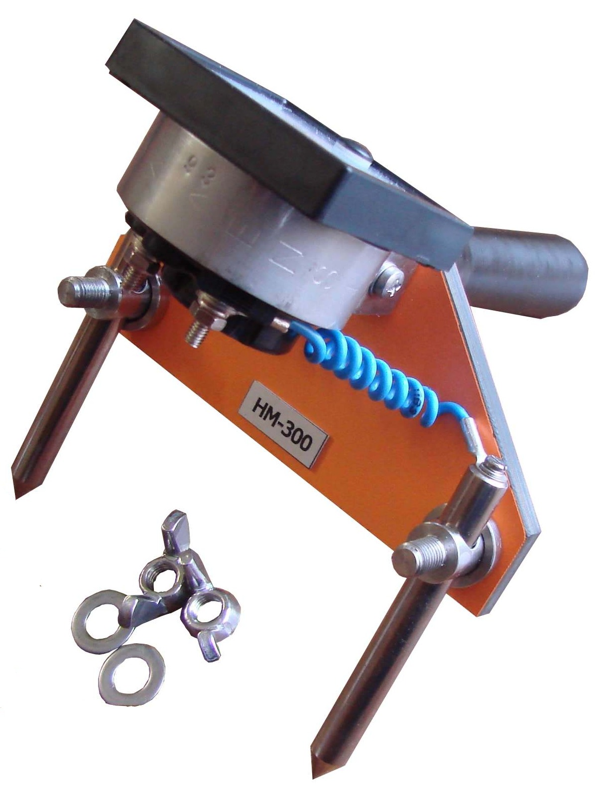
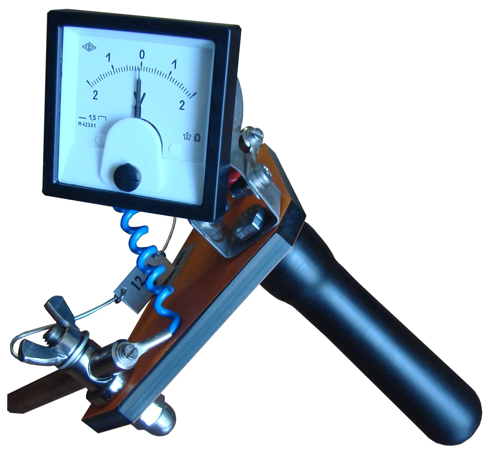
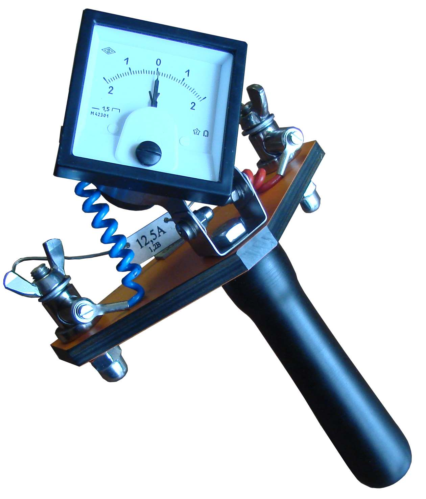
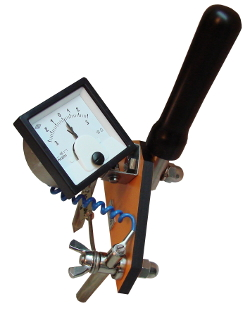

Для перехода щелкните по ссылке на желтом фоне:
Вилка нагрузочная НМ-300Э
НАЗНАЧЕНИЕ
Примечание:
Здесь и далее по тексту под аккумулятором понимается одиночная аккумуляторная ячейка (банка) номинальным напряжением 1,2 В - для щелочных
аккумуляторов.
Нагрузочная вилка, модель НМ-300Э, предназначена для проверки технического состояния щелочных аккумуляторов типа НК-55, НК 125, НК-125П, применяемых на электровозах, электропоездах и т. п.
Условия эксплуатации вилки нагрузочной НМ-300Э:
Температура от минус 50 до плюс 60 °С, относительная влажность 95 % при температуре плюс 35 °С.
С помощью нагрузочной вилки НМ-300Э можно измерить:
- напряжение аккумулятора без нагрузки (э.д.с. аккумулятора);
- напряжение аккумулятора под нагрузкой. При этом имеется возможность проверки как номинальным током нагрузки: 12,5 А, 16 А, 25 А
(ток указан при номинальном напряжении аккумулятора 1,2 В), так и максимально допустимым током- 50 А (ток
указан при минимально допустимом напряжении аккумулятора 1,0 В).
ТЕХНИЧЕСКИЕ ХАРАКТЕРИСТИКИ ВИЛКИ НМ-300Э
1. Тип - переносной.
2. Номинальное напряжение проверяемого щелочного аккумулятора: - 1,2 В .
3. Стандартная комплектация:
сопротивление маркированное «12,5А» - 1 шт;
- сопротивление маркированное «16А» - 1 шт;
- сопротивление маркированное «25А» - 1 шт;
- сопротивление маркированное «50А» - 1 шт.
4. Измерительные приборы:
- вольтметр с пределами измерений 2-0-2 В, класса точности 1,5.
5. Угол поворота блока вольтметра:
- вокруг горизонтальной оси совпадающей с осью ручки на угол ±90 градусов;
- вокруг горизонтальной оси, перпендикулярной оси ручки - на угол не менее 60 градусов.
6. Угол поворота вольтметра в обойме - 360 градусов.
7. Основные размеры вилки в рабочем положении (вольтметр расположен горизонтально):
- высота вилки -133 мм;
- длина от конца ручки до края блока вольтметра - 197 мм;
- ширина вилки - 136 мм;
- расстояние между осями ножек 110 мм (регулируется).
8. Ориентировочная масса вилки 0,460 кг.
Скачать Руководство по эксплуатации НМ-300Э
МЕТРОЛОГИЧЕСКОЕ ОБЕСПЕЧЕНИЕ
Измерительный прибор нагрузочной вилки НК-500 (НК-500Л) - вольтметр М42301. Внесен в реестры средств измерений России, Беларуси и Казахстана.
Сертификаты и Свидетельства об утверждении средств измерений можно посмотреть здесь: Смотреть Сертификат.
Нагрузочная вилка не является средством измерений - это испытательное оборудование. Обязательной сертификации в РФ не подлежит - имеется
отказное письмо ВНИИСа № 101-КС/235 от 31.03.2021г.
Все нагрузочные вилки "ИнтерБалт" поставляются с первичной метрологической аттестацией Производителем, согласно ГОСТ Р 8.568-2017
"Государственная система обеспечения единства измерений. Аттестация испытательного оборудования. Основные положения".
УСТРОЙСТВО ВИЛКИ НМ-300Э
1. Конструкция нагрузочной вилки НМ-300Э аналогична конструкции нагрузочной вилки НМ-300.


2. Измерительные ножки нагрузочной вилки могут поворачиваться для установки на размер между выводами аккумулятора. Сменное нагрузочное сопротивление крепится к фиксаторам ножек двумя гайками М8.

3. Вольтметр может поворачиваться в обойме крепления на 360 градусов. Блок вольтметра
может поворачиваться относительно горизонтальной оси совпадающей с продольной осью ручки оси на ±90 градусов – для обеспечения удобства
работы в труднодоступных местах.
Также блок вольтметра может поворачиваться вокруг горизонтальной оси, перпендикулярной оси ручки, на угол до 60 градусов.


4. Ручка служит для удержания вилки во время работы.
6. Опция № 1. Поставляется за отдельную плату см. Цены. Дает возможность установить ручку вертикально для удобства работы в ограниченном пространстве, особено где имеет место ограничение по высоте (в подвагонном аккумуляторном ящике и т. п.).
7. Вилка нагрузочная НМ-300Е с ручкой установленной вертикально (использование Опции №1):


РАБОТА С ВИЛКОЙ НМ-300Э
Возможны два варианта работы с нагрузочной вилкой НМ-300:
1. Нормальный режим проверки - проверка аккумулятора с замером напряжения без нагрузки и с замером
напряжения под нагрузкой.
При этом с нагрузочной вилки снимается нагрузочное сопротивление и производится замер напряжения аккумулятора без нагрузки
(э.д.с. аккумулятора). После чего в нагрузочную вилку устанавливается сменное сопротивление, соответствующее типу и емкости
испытуемого аккумулятора, и производится замер напряжения аккумулятора под нагрузкой в течение 5 секунд.
Сравнивая эти два полученных напряжения, определяют техническое состояние аккумулятора.
2. Ускоренный режим проверки - проверка аккумулятора с замером напряжения только под нагрузкой.
При этом в нагрузочную вилку устанавливается сменное сопротивление, соответствующее типу и емкости испытуемого аккумулятора,
измерительные ножки нагрузочной вилки приводятся в контакт с выводами аккумулятора и в течение 5 секунд производится замер
напряжения под нагрузкой.
Напряжение аккумулятора под нагрузкой в течение 5 секунд должно быть:
- Для тяговых щелочных аккумуляторов - не ниже 1,0 В.
Если напряжение аккумулятора под нагрузкой ниже указанного, то аккумулятор либо разряжен, либо неисправен.
Ваши замечания, предложения и пожелания по конструкции или эксплуатации вилки Вы можете отправить на электронную почту interbalt39@gmail.com.
Для перехода щелкните по ссылке на желтом фоне: